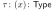

Note
Table of Contents
1. categorical logic and type theory
1.1. chapter 0
This introductory chapter is divided into two parts. It first discusses some generalities concerning logic, type theory and category theory, and describes some themes that will be developed in this book. It then continues with a description of the (standard) logic and type theory of ordinary sets, from the perspective of fibred category theory–typical of this book. This description focuses on the fundamental adjunctions that govern the various logical and type theoretic operations.
1.2. 0.1 Logic, type theory, and fibred category theory
1.2.1. part one: logic over a type theory
A logic is always a logic over a type theory. This statement sums up our approach to logic and type theory, and forms an appropriate starting point. It describes a type theory as a “theory of sorts”, providing a domain of reason-ing for a logic. Roughly, types are used to classify values, so that one can distinguish between zero as a natural number  and zero as a real number
and zero as a real number  , and between addition
, and between addition  on natural numbers and addition
on natural numbers and addition  on real numbers. In these examples we use atomic types
on real numbers. In these examples we use atomic types  and
and  and composite types
and composite types  and
and  obtained with the type constructors
obtained with the type constructors  for Cartesian product, and
for Cartesian product, and  for exponent (or function space). The relation
for exponent (or function space). The relation  as in
as in  , is the inhabitation relation of type theory. It expresses that
, is the inhabitation relation of type theory. It expresses that  is of type , i.e. that inhabits . It is like membership
is of type , i.e. that inhabits . It is like membership  in set theory, except that is untyped, since everything is a set. But a string is something which does not inhabit the type of natural numbers. Hence we shall have to deal with rules regulating inhabitation, like
in set theory, except that is untyped, since everything is a set. But a string is something which does not inhabit the type of natural numbers. Hence we shall have to deal with rules regulating inhabitation, like
![\[
\prftree[r]{}
{}
{0 \colon \N}\quad
\prftree[r]{}
{n \colon \N}
{\texttt{succ}(n)\colon \N}
\]](./ltximg/org-tex-4e1a1a737d9b7786d9f3244b115c839c170398da.svg)
The first rule is unconditional: it has no premises and simply expresses that the term O inhabits the type  . The second rule tells that if we know that
. The second rule tells that if we know that  inhabits , then we may conclude that
inhabits , then we may conclude that  also inhabits , where
also inhabits , where  may be read as successor operation. In this way one can generate terms, like
may be read as successor operation. In this way one can generate terms, like  inhabiting the type .
inhabiting the type .
In predicate logic one reasons about such terms in a type theory, like in
![\[\forall x \colon \N. \exists y\colon \N . y > \succ(x)\]](./ltximg/org-tex-d4ba31951d081015db7081de79c18e18a7f27bca.svg)
This gives an example of a proposition. The fact that this expression is a proposition may also be seen as an inhabitation statement, so we can write
![\[(\forall x \colon \N . \exists y \colon \N . y > \succ(x))\colon \mathsf{Prop}\]](./ltximg/org-tex-efb27d10bf5332b5b24768b13eda01852f10169b.svg)
using a type Prop of propositions. In this particular proposition there are no free variables, but in predicate logic an arbitrary proposition  may contain free variables. These variables range over types, like in:
may contain free variables. These variables range over types, like in:
![\[x > 5 \colon \mathsf{Prop}, \text{ where }x \colon \N \quad \text{or} \quad
x > 5 \colon \mathsf{Prop}, \text{ where } x \colon \R\]](./ltximg/org-tex-0e25268d3197e888e4cfba851ff817e7367d1987.svg)
We usually write these free variables in a “context", which is a sequence of variable declarations. In the examples the sequence is a singleton, so we write
![\[x \colon \N \vdash x > 5 \colon \mathsf{Prop}\quad \text{and} \quad
x \colon \R \vdash x > 5 \colon \mathsf{Prop}\]](./ltximg/org-tex-9ae98301ea431b17391ac12b9013b8db607a192b.svg)
The turnstile symbol  separates the context from the conclusion: we read the sequent
separates the context from the conclusion: we read the sequent  as: in the context where the variable
as: in the context where the variable  is of type , the expression
is of type , the expression  is a proposition. Well-typedness is of importance, since if is a string, then the expression does not make sense (unless one has a different operation
is a proposition. Well-typedness is of importance, since if is a string, then the expression does not make sense (unless one has a different operation  on strings, and one reads '
on strings, and one reads ' ' as a string).
' as a string).
This explains what we mean with: a logic is always a logic over a type theory. Underlying a logic there is always a calculus of typed terms that one reasons about. But one may ask: what about single-sorted logic (i.e. single-typed, or untyped, logic) in which variables are thought of as ranging over a single domain, so that types do not really play a role? Then one still has a type theory, albeit a very primitive one with only one type (namely the type of the domain), and no type constructors. In such situations one often omits the (sole) type, since it has no role. But formally, it is there. And what about propositional logic? It is included as a border case: it can be seen as a degenerate predicate logic in which all predicates are closed (i.e. do not contain term variables), so one can see propositional logic as a logic over the empty type theory.
1.2.2. part two: type theory
We distinguish three basic kinds of type theory:
- simple type theory (STT);
- dependent type theory (DTT);
- polymorphic type theory (PTT).
In simple type theory there are types built up from atomic types (like , above) using type constructors like exponent , Cartesian product or coproduct (disjoint union)  . Term variables
. Term variables  are used to build up terms, using atomic terms and introduction and elimination operations associated with the type constructors (like tuples and projections for products ). Types in simple type theory may be seen as sets, and (closed) terms inhabiting types as elements of these sets. In
are used to build up terms, using atomic terms and introduction and elimination operations associated with the type constructors (like tuples and projections for products ). Types in simple type theory may be seen as sets, and (closed) terms inhabiting types as elements of these sets. In dependent type theory, one allows a term variable to occur in another type . This increases the expressive power, for example because one can use in DTT the type  of
of  matrices (say over some fixed field), for
matrices (say over some fixed field), for  and
and  terms of type . If one thinks of types as sets, this type dependency is like having for each element
terms of type . If one thinks of types as sets, this type dependency is like having for each element  of a set
of a set  , another set
, another set  . One usually writes
. One usually writes  and sees
and sees  as an -indexed family of sets. Thus, in dependent type theory one allows type-indexed-types, in analogy with set-indexed-sets. Finally, in
as an -indexed family of sets. Thus, in dependent type theory one allows type-indexed-types, in analogy with set-indexed-sets. Finally, in polymorphic type theory, one may use additional type variables  to build up types. So type variables may occur inside a type
to build up types. So type variables may occur inside a type  , like in the type
, like in the type  of lists of type . This means that one has types, indexed by (or parametrised by) the universe
of lists of type . This means that one has types, indexed by (or parametrised by) the universe  of all types. In a set theoretic picture this involves a set
of all types. In a set theoretic picture this involves a set  for each set
for each set  . One gets indexed collections
. One gets indexed collections  of sets
of sets  .
.
These three type theories are thus distinguished by different forms of in-dexing of types: no indexing in simple type theory, indexing by term variables in dependent type theory, and indexing by type variables  in polymorphic type theory. One can also combine dependent and polymorphic type theory, into more complicated type theories, for example, into what we call polymorphic dependent type theory (PDTT) or full higher order dependent type theory (FhoDTT).
in polymorphic type theory. One can also combine dependent and polymorphic type theory, into more complicated type theories, for example, into what we call polymorphic dependent type theory (PDTT) or full higher order dependent type theory (FhoDTT).
What we have sketched in the beginning of this section is predicate logic over simple type theory. We shall call this simple predicate logic (SPL). An obvious extension is to consider predicate logic over dependent type theory, so that one can reason about terms in a dependent type theory. Another extension is logic over polymorphic type theory. This leads to dependent predicate logic(DPL) and to polymorphic predicate logic (PPL). If one sees a typed calculus as a (rudimentary) programming language, then these logics may be used as program logics to reason about programs written in simple, dependent, or polymorphic type theory. This describes logic as a “module” that one can plug on to a type theory.
1.2.3. part three: fibred category
This book focuses on such structural aspects of logic and type theory. The Language and techniques of category theory will be essential. For example, we talked about a logic over a type theory. Categorically this will correspond to one ("total") category, capturing the logic, being fibred over another ("base") category, capturing the type theory. Indeed, we shall make special use of tools from fibred category theory. This is a special part of category theory, stemming from the work of Grothendieck in algebraic geometry, in which (continuous) indexing of categories is studied. As we already mentioned, the various forms of type theoretic indexing distinguish varieties of type theory. And also, putting a logic on top of some type theory (in order to reason about it) will be described by putting a fibration on top of the categorical structure corresponding to the type theory. In this way we can put together complicated structures in a modular way.
Fibred category theory is ordinary category theory with respect to a base category. Also, one can say, it is ordinary category theory over a base category. Such a base category is like a universe. For example, several concepts in category theory are defined in terms of sets. One says that a category  has arbitrary products if for each set I and each -indexed collection
has arbitrary products if for each set I and each -indexed collection  of objects
of objects  there is a product object
there is a product object  together with projection morphisms
together with projection morphisms  , which are suitably universal. In category theory one is not very happy with this privileged position of sets and so the question arises: is there a way to make sense of such products with respect to an object I of a ‘universe’ or ‘base category’
, which are suitably universal. In category theory one is not very happy with this privileged position of sets and so the question arises: is there a way to make sense of such products with respect to an object I of a ‘universe’ or ‘base category’  , more general than the category
, more general than the category  of sets and functions? This kind of generality is needed to interpret logical products
of sets and functions? This kind of generality is needed to interpret logical products  or type theoretic products
or type theoretic products  when the domain of quantification
when the domain of quantification  is not interpreted as a set (but as some ordered set, or algebra, for example).
is not interpreted as a set (but as some ordered set, or algebra, for example).
Another example is local smallness. A category is locally small if for each pair of objects  the morphisms
the morphisms  in form a set (as opposed to a proper class). That is, if one has homsets
in form a set (as opposed to a proper class). That is, if one has homsets  as objects in the category of sets. Again the question arises whether there is a way of saying that is locally small with respect to an arbitrary universe or base category and not just with respect to .
as objects in the category of sets. Again the question arises whether there is a way of saying that is locally small with respect to an arbitrary universe or base category and not just with respect to .
Fibred category theory provides answers to such questions. It tells what it means for a category  to be “fibred over' a base category . In that case we
write
to be “fibred over' a base category . In that case we
write ![\(
\begin{gathered}
\scriptstyle \mathbb{E}\\[-8pt]
\scriptstyle\downarrow\\[-7pt]
\scriptstyle \mathbb{B}
\end{gathered}\)](./ltximg/org-tex-7dc1d35c0b5dd647b2527469595ec34e06a3e0c7.svg) , where the arrow
, where the arrow  is a functor which has a certain property that makes it into a fibration. And in such a situation one can answer the above questions: one can define quantification with respect to objects
is a functor which has a certain property that makes it into a fibration. And in such a situation one can answer the above questions: one can define quantification with respect to objects  and say when one has appropriate hom-objects
and say when one has appropriate hom-objects  for
for  . The ways of doing this will be explained in this book. And for a category there is always a ‘family fibration’
. The ways of doing this will be explained in this book. And for a category there is always a ‘family fibration’ ![\(
\begin{gathered}
\scriptstyle \mathrm{Fam}(\C)\\[-7pt]
\scriptstyle \downarrow \\[-7pt]
\scriptstyle \mathbf{Sets}
\end{gathered}\)](./ltximg/org-tex-1cd0e1f9de7f8c0a42dc1c9affc61117a6c9138c.svg) of set-indexed families in .
The fibred notions of quantification and local smallness, specialised to this family fibration, are the ordinary notions described above. Thus, in the family fibration we have our standard universe (or base category) of sets.
of set-indexed families in .
The fibred notions of quantification and local smallness, specialised to this family fibration, are the ordinary notions described above. Thus, in the family fibration we have our standard universe (or base category) of sets.
1.2.4. part four: categorical phenomena
There are many categorical notions arising naturally in logic and type theory (see the list below). And many arguments in category theory can be formulated conveniently using logic and type theory as “internal” language (sometimes called the “Mitchell-Benabou” language, in the context of topos theory). These fields however, have different origins: category theory arose in the work of Eilenberg and Mac Lane in the 1940s within mathematics, and was in the beginning chiefly used in algebra and topology. Later it found applications in almost all areas of mathematics (and computer science as well, more recently). Type theory is also from this century, but came up earlier in foundational work by Russell in logic (to avoid paradoxes). Recently, type theory has become important in various (notably functional) programming languages, and in computer mathematics: many type theories have been used during the last two decades as a basis for so-called(?) proof-assistants. These are special computer programs which assist in the verification of mathematical statements, expressed in the language of some (typed) logic. The use of types in these areas imposes certain restrictions on what can be expressed, but facilitates the detection of various errors. We think it is in a sense remarkable that two such fundamental fields (of category theory and of type theory)—with their apparent differences and different origins—are so closely related. This close relationship may be beneficial in the use and further development of both these fields.
We shall be especially interested in categorical phenomena arising within logic and type theory. Among these we mention the following.
(i) Every context of variable declarations (in type theory) or of premises(in logic) is an index. It is an index for a ‘fibre’ category which captures the logic or type theory that takes place within that context–with the declared variables, or under the assumptions. The importance of this categorical role of contexts is our motivation for paying more than usual attention to contexts in our formulations of type theory and logic.
(ii) Appropriately typed sequences of terms give rise to morphisms be tween contexts. This is the canonical way to produce a category from types and terms. These context morphisms induce substitution functors between fibre categories. The structural operations of weakening (adding a dummy assumption) and contraction (replacing two assumptions of the same kind by a single one) appear as special cases of these substitution functors: weakening is substitution along a projection  , and contraction is substitution along a diagonal
, and contraction is substitution along a diagonal  . These and may be Cartesian projections and diagonals in simple and polymorphic type theories, or ‘dependent’ projections and diagonals in dependent type theory.
. These and may be Cartesian projections and diagonals in simple and polymorphic type theories, or ‘dependent’ projections and diagonals in dependent type theory.
(iii) The basic operations of logic and type theory can be described as adjoints in category theory. Such operations standardly come with an intro-duction and an elimination operation, which are each other's inverses (via the so-called ( )- and (
)- and ( )-conversions). Adjoint correspondences capture such situations. This may be familiar for the (simple) type theoretic constructors
)-conversions). Adjoint correspondences capture such situations. This may be familiar for the (simple) type theoretic constructors  , , , and (and for their propositional counterparts
, , , and (and for their propositional counterparts  ,
,  ,
,  ,
,  and
and  ), since these are the operations of bicartesian closed categories (which can be described via standard adjunctions). But also existential
), since these are the operations of bicartesian closed categories (which can be described via standard adjunctions). But also existential  and universal
and universal  quantification in predicate logic over a type , dependent sum
quantification in predicate logic over a type , dependent sum  and product
and product  in dependent type theory over a type , and polymorphic sum
in dependent type theory over a type , and polymorphic sum  and product
and product  in polymorphic type theory over the universe Type of types, are characterised as left and right adjoints, namely to the weakening functor which adds an extra dummy assumption
in polymorphic type theory over the universe Type of types, are characterised as left and right adjoints, namely to the weakening functor which adds an extra dummy assumption  , or . Moreover, equality
, or . Moreover, equality  on a type is characterised as left adjoint to the contraction functor which replaces two variables
on a type is characterised as left adjoint to the contraction functor which replaces two variables  by a single one (by substituting for
by a single one (by substituting for  ). By ‘being characterised’ we mean that the standard logical and type-theoretical rules for these operations are (equivalent to) the rules that come out by describing these operations as appropriate adjoints.
). By ‘being characterised’ we mean that the standard logical and type-theoretical rules for these operations are (equivalent to) the rules that come out by describing these operations as appropriate adjoints.
The most important adjunctions are:
![\[
\begin{aligned}
\text{existential } \exists , \text{ sum } \Sigma
& \dashv \text{ weakening}\\
\text{weakening}
& \dashv \text{ contraction}\\
\text{equality}
& \dashv \text{ comprehension}\\
\text{(but also: equality}
& \dashv \text{ comprehension, via a different functor)}\\
\text{quotients}
& \dashv \text{ equality}
\end{aligned}\]](./ltximg/org-tex-429f63bb5d4cbabd09681614e2a5ebe523a65155.svg)
The first four of these adjoints were recognised by Lawvere (and the last two are identified in this book). Lawvere first described the quantifiers  ,
,  as left and right adjoints to arbitrary substitution functors. The above picture with separate adjoints to weakening and to contraction functors is a refinement, since, as we mentioned in (ii), weakening and contraction functors are special cases of substitution functors. (These operations of weakening and contraction can be suitably organised as a certain comonad; we shall define quantification and equality abstractly with respect to such comonads.)
as left and right adjoints to arbitrary substitution functors. The above picture with separate adjoints to weakening and to contraction functors is a refinement, since, as we mentioned in (ii), weakening and contraction functors are special cases of substitution functors. (These operations of weakening and contraction can be suitably organised as a certain comonad; we shall define quantification and equality abstractly with respect to such comonads.)
(iv) As we mentioned above, the characteristic aspect of dependent type theory is that types may depend on types, in the sense that term variables inhabiting types may occur in other types. And the characteristic aspect of polymorphic type theory is that type variables may occur in types. Later we shall express this as: types may depend on kinds. These dependencies amount to certain forms of indexing. They are described categorically by fibred (or indexed) categories. Thus, if one knows the dependencies in a type theory, then one knows its underlying categorical structure. The additional type theoretic structure may be described via certain adjunctions, as in the previous point.
(v) Models of logics and type theories are (structure preserving) functors. From a specific system in logic or type theory one can syntactically build a so-called ‘classifying’ (fibred) category, using a term model—or generalised Lindenbaum-Tarski—construction. A model of this system is then a (fibred) functor with this classifying (fibred) category as domain, preserving appropriate structure. We shall make systematic use of this functorial semantics. It was introduced by Lawvere for single-typed simple type theories. And it ex-tends to other logics and type theories, and thus gives a systematic description of models of (often complicated) logics and type theories.
(vi) If  is a type (in polymorphic type theory) in which a free type variable occurs,then,under reasonable assumptions about type formation, the operation
is a type (in polymorphic type theory) in which a free type variable occurs,then,under reasonable assumptions about type formation, the operation ![\(\tau \mapsto \sigma [\tau / \alpha]\)](./ltximg/org-tex-8e19c58b19d0daa734963e89c2b636a6ceb1d058.svg) of substituting a type
of substituting a type  for , is functorial. This functoriality is instrumental in describing the rules of (co-)inductively defined data types in terms of (co-)algebras of this functor. And the reasoning principles (or logic) associated with such data types can also be captured in terms of (co-)algebras (but for a different functor, obtained by lifting the original functor to the logical world of predicates and relations).
for , is functorial. This functoriality is instrumental in describing the rules of (co-)inductively defined data types in terms of (co-)algebras of this functor. And the reasoning principles (or logic) associated with such data types can also be captured in terms of (co-)algebras (but for a different functor, obtained by lifting the original functor to the logical world of predicates and relations).
(vii) A logical framework is a type theory  which is expressive enough so that one can formulate other systems
which is expressive enough so that one can formulate other systems  of logic or of type theory inside . Categorically one may then describe (the term model of) as an internal category in (the term model of)
of logic or of type theory inside . Categorically one may then describe (the term model of) as an internal category in (the term model of)  . We briefy discuss dependent type theory as a logical framework in Section 10.2, but we refer to [87] for this connection with internal categories.
. We briefy discuss dependent type theory as a logical framework in Section 10.2, but we refer to [87] for this connection with internal categories.
1.2.5. part five: categorical structures
This is not a book properly on logic or on type theory. Many logical and type theoretical calculi are described and some illustrations of their use are given, but there is nothing about specific proof-theoretic properties like cut-elimination, Church-Rosser or strong normalisation. Therefore, see [14]. The emphasis here lies on categorical semantics. This is understood as follows. Category theory provides means to say what a model of, say predicate logic, should look like. It gives a specification, or a hollow structure, which captures the essentials. A proper model is something else, namely an instance of such a structure. We shall describe both these hollow structures, and some instances of these. (But we do not investigate the local structure or theories of the example models, like for example in [197] or in [13, Chapter 19].)
So what, then, is the advantage of knowing what the categorical structures are, corresponding to certain logics and type theories?
Firstly, it enables us to easily and quickly recognise that certain mathematical structures are models of some logical or type theoretical calculus, without having to write out an interpretation in detail. The latter can be given for the ‘hollow categorical structure’, and need not be repeated for the particular instances. One only has to check that the particular structure is an instance of the general categorical structure. For example, knowing that a particular category (of domains, say) is Cartesian closed yields the information that we can interpret simple type theory.
Secondly, once this is realised, we can turn things around, and start using our calculus (suitably incorporating the constants in a signature) to reason directly and conveniently about a (concrete or abstract categorical) model. This is the logician's view of the mathematician's use of language: when reasoning about a particular mathematical structure (say a group  ), one formally adds the elements
), one formally adds the elements  as constants
as constants  to the language, and one uses the resulting “internal” language to reason directly about . The same approach applies to more complex mathematical structures, like a fibred category of domains: one then needs a suitable type theoretic language to reason about such a complex (indexed) structure.
to the language, and one uses the resulting “internal” language to reason directly about . The same approach applies to more complex mathematical structures, like a fibred category of domains: one then needs a suitable type theoretic language to reason about such a complex (indexed) structure.
The third advantage is what a clear (categorical) semantics provides a certain syntactic hygiene, and deepens the understanding of the various logical and type theoretical systems. For example, the principle that a (possibly new) operation in logic or type theory should correspond to an adjoint gives certain canonical introduction, elimination and conversion rules for the constructor. Fourthly, models can be used to obtain new results about one's logical or type theoretical system. Consistency, conservativity and independence results are often obtained in this manner. Finally, and maybe most importantly, models provide meaning to one's logical or type theoretical language, resulting in a better understanding of the syntax.
There are so many systems of logic and type theory because there are certain"production rules" which generate new systems from given ones.
(i) There are three basic type theories: simple type theory (STT), depen-dent type theory (DTT) and polymorphic type theory (PTT).
(ii) Given a certain type theory, one can construct a logic over this type theory with predicates  containing free variables
containing free variables  inhabiting types. This allows us to reason about (terms in) the given type theory.
inhabiting types. This allows us to reason about (terms in) the given type theory.
(ili) Given a logic (over some type theory), one can construct a new type theory (extending the given one) by a propositions-as-types upgrade: one considers the propositions  in the logic as types in the new type theory, and derivations in the logic as terms in the new type theory.
in the logic as types in the new type theory, and derivations in the logic as terms in the new type theory.
This modularity is reflected categorically in the following three points.
(i) There are three basic categorical structures: for STT (Cartesian closed categories), for DTT (what we call closed comprehension categories) and for PTT (certain fibred Cartesian closed categories).
(ii) Putting a logic on a type theory corresponds to putting a preorder fbration on top of the structure describing the type theory. For logic one uses preorder structures, since in logic one is interested in provability and not in explicit proofs (or proof-terms, as in type theory), which are described as non-trivial morphisms.
(ii) Under a propositions-as-types upgrade one replaces a preorder fibra-tion by an ordinary fibration (with proper fibre categories), thus making room for proof-terms as proper morphisms.
(Both second points are not as unproblematic as they may seem, because one may have complicated type theories, say with two syntactic universes of types and of kinds, in which there are many ways of putting a logic on top of such a type theory: one may wish to reason about types, or about kinds, or about both in the same logic. Categorically, there are similarly different ways in which a preorder fibration can be imposed.)
By the very nature of its contents, this book is rather descriptive. It contains few theorems with deep mathematical content. The influence of computer science may be felt here, in which much emphasis is put on the description of various languages and formalisms.
1.2.6. part six: what this book is not
Also, it is important to stress that this is not a book properly on fibred category theory. And it is not intended as such. It does contain the basic concepts and results from fibred category theory, but only as far as they are directly useful in logic or type theory (and not in topology, for example). Some of these basic results have not been published previously, but have been folklore for some time already. They have been discovered and rediscovered by various people, and the precise fow of ideas is hard to track in detail. What we present in this book is not a detailed historical account, and we therefore apologise in advance for any misrepresentation of history.
We sketch what we see as the main lines. In the development of fibred category and categorical logic one can distinguish an initial French period starting in the 1960s with Grothendieck's definition of a fibration (i.e. a fibred category), published in [107]. It was introduced in order to study descent. The ensuing theory was further developed by Grothendieck and (among others) Giraud [100] and Benabou. The latter's work is more logical and foundational in spirit than Grothendieck's (involving for example suitable fibred notions of local smallness and definability), and is thus closest to the current work. Many of the basic notions and results stem from this period.
In the late 1960s Lawvere first applied indexed categories in the study of logic. Especially, he described quantification and equality in terms of adjoints to substitution functors,and showed that also comprehension involves an adjunction. This may be seen as the start of categorical logic (explicitly, in his influential “Perugia Lecture Notes” and also in [192, 193]). At about the same time, the notion of elementary topos was formulated, by Lawvere and Tierney. This resulted in renewed attention for indexed (and internal) categories, to study phenomena over (and inside) toposes. See for example [173, 169] and the references there.
Then, in the 1980s there is the start of a type theoretic boom, in which indexed and fibred categories are used in the semantics of polymorphic and dependent type theories, see the basic papers 306, 307, 148] and the series of PhD theses [45,330,75,185,318,252,260,7,154,89,217,86,60,289, 125, 4, 198, 133]. This book collects much material from this third phase. Explicitly, the connection between simple type theory and Cartesian closed categories was first established by Lawvere and Lambek. Later, dependent type theory was related to locally Cartesian closed categories by Seely, and to the more general “display map categories” by Taylor. The relation between polymorphic type theory and certain fibred (or indexed, or internal) Cartesian closed categories is due to Seely, Lamarche and Moggi. Finally, more compli-cated systems combining polymorphic and dependent systems (like the calcu-lus of constructions) were described categorically by Hyland, Pitts, Streicher, Ehrhard, Curien, Pavlovic, Jacobs and Dybjer. This led to the (surprising) discovery of complete internal categories by Moggi and Hyland (and to the subsequent development of ‘synthetic’ domain theory in abstract universes).
Interestingly, fibred categories are becoming more and more important in various other areas of (theoretical) computer science, precisely because the aspects of indexing and substitution (also called renaming, or relabelling) are so fundamental.Among these areas we mention(without pretension to be in any sense complete): database theory [295, 151, 9], rewriting [12], automata theory [175, 10], abstract environments [279], data flow networks [310], constraint programming [219], concurrency theory [345, 131], program analysis [230, 25], abstract domain theory [146] and specification [152, 327, 48, 159].
Many topics in the field of categorical logic and type theory are not discussed in this book. Sometimes because the available material is too recent (and un-settled), sometimes because the topic deviates too much from the main line, but mostly simply because of lack of space. Among these topics we mention(with a few references): inductively and co-inductively defined types in depen-dent type theory [70, 71], categorical combinators [63, 290, 116], categorical normalisation proofs [147, 238, 5], fixed points [16], rewriting and 2-categorical] structure [308, 278], modal logic [93], μ-calculi [313], synthetic domain theory [144, 331, 264], a fibred Giraud theorem [229], a fibred adjoint functor theorem [47, 246], descent theory [168] (especially with its links to Beth de-finability [208]], fbrations in bi-categories [315, 317], 2-fbrations [127], and the theory of stacks [100].
The choice has been made to present details of interpretation functions for simple type theory in full detail in Chapter 2, together with the equivalent functorial interpretation. In later chapters interpretations will occur mostly in the more convenient functorial form. For detailed information about interpre-tation functions in polymorphic and (higher order) dependent type theories we refer to [319, 61]. As we proceed we will be increasingly blurring the distinction between certain type theories and certain fibred categories, thus decreasing the need for explicit interpretations